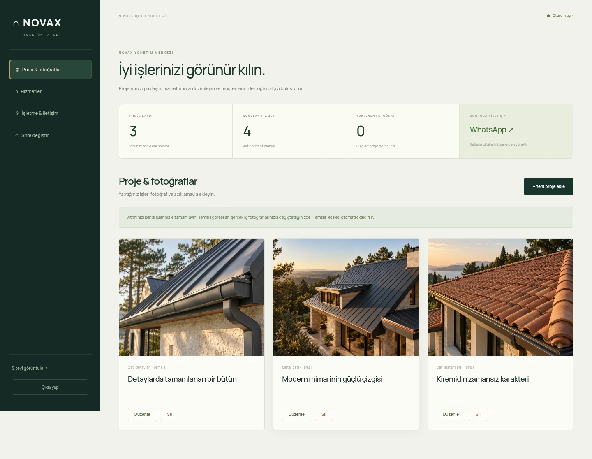

NOVAX YÖNETİM MERKEZİ
Admin panelinin yeni görünümü
Bu dosya panelin ekran görüntüsünü gösterir. Gerçek fotoğraf ve içerik yönetimi, hosting kurulumu tamamlandıktan sonra sitenizin /admin.php adresinde çalışır.

NOVAX YÖNETİM MERKEZİ
Bu dosya panelin ekran görüntüsünü gösterir. Gerçek fotoğraf ve içerik yönetimi, hosting kurulumu tamamlandıktan sonra sitenizin /admin.php adresinde çalışır.
